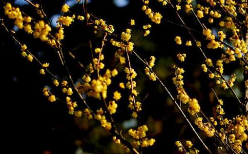

老实念佛成就一尊肉身菩萨，这是发生在浙江省岱山县衢山镇法华禅院的一件真实奇事。法华禅院的厚存老法师，一生修行以念佛为主，2009年12月示现小病，安详示寂，圆寂四年后开龛，惊现肉身不坏。
厚存法师生于1928年，岱山县衢山镇鼠浪村人，俗名金彩利，三岁被别人领养，六岁因全身出水痘导致双目失明。之后，被送往法华庵，礼净心法师剃度出家，法名厚存，三十岁于普陀山普济寺受具足戒。厚存法师住世82年，戒腊52年。
老实念佛成就了一尊肉身菩萨！
厚存法师2009年12月安详圆寂后，法体单盘坐在一个普通的木龛内，安放于本寺法华禅院后山。第四年也就是2013年的农历十月初三，寺院决定为厚存法师举行荼毗法会，还特别邀请了大庆果成寺的衍天法师等一行僧众及本地居士二百余人参加。在荼毗仪式之前，因思念之情，恳请打开木龛看法师最后一眼。认真一看，末学惊呆了，发现肉身未坏，齿牙洁白坚固，全身一切完好，且端坐于木龛内栩栩如生，最不可思议的是木龛内外并未做任何防腐措施，木龛衣物基本坏烂，唯有法师的肉身与身上的衣服一切完好，而且探视触摸身体饱满富有弹性，更神奇的是头发长出一公分之长，且有少处白发变黑。念佛成就了叹为稀有的一尊肉身菩萨！
衍天法师对众弟子开示：“厚存师父一生念佛成就了如此大的功德，示现肉身不腐度化众生。信愿念佛，决生净土。此乃念佛成佛的有力证明！我们一定要将肉身菩萨保护起来，给予贴金供养，给现在未来一切众生树立念佛成佛的殊胜榜样。”当天下午六时，慈悲的衍天法师与慧持商讨后立即率众连夜将肉身菩萨从山上请回，法师又慈悲细心地教导了一系列保护肉身菩萨的方法。
弟子在请出肉身菩萨为其贴金的过程中，肉身菩萨多次现瑞相与感应。其中最殊胜的是今年2014年，宁波的一位莲友叶居士听闻肉身菩萨现身，便在四月初八释迦佛圣诞之日，特来参拜。叶居士来到寺院便入大殿拜佛，她边拜边想着肉身菩萨供奉在哪里呢，想着看着，猛然看到肉身菩萨就在身旁的大殿内，心中欢喜、真诚礼拜，刚拜下去第一拜就看到肉身菩萨用慈眉善目的眼光看着她，当时以为是自己眼睛花了，第二拜再看看还是那样，而且嘴巴周围闪闪发光。第二天，她如小孩般高兴地对慧持说：“师父，肉身菩萨是活生生的呀，眼睛和我们的眼睛一样有神采，嘴巴一直放光。”慧持相信这是真的，因为一是她对肉身菩萨非常恭敬，二是她念佛也相当精进，所以能感应道交。另外，凡是对肉身菩萨恭敬有信心的人都看到过瑞相，众人皆叹不可思议。
厚存法师一生的修持
厚存法师在世时就是默默无闻精进修持，没有所谓的名闻利养，贪瞋痴慢，不说人我是非，一生清贫淡泊，老实做人，更重要的是念了一生的南无阿弥陀佛！法师在往生前一年就告诫弟子：“往生以后你们不要给我在往生堂立牌位上供，我要往生成佛去了，还用吃那些食物吗？”厚存法师早已知道并坚信自己可以往生净土的。
印光大师曾在《复叶福备居士书一》中开示：“无论在家在庵，必须敬上和下。忍人所不能忍，行人所不能行。代人之劳，成人之美。静坐常思己过，闲谈不论人非。行住坐卧，穿衣吃饭，从朝至暮，从暮至朝，一句佛号，不令间断。或小声念，或默念，除念佛外，不起别念。若或妄念一起，当下就要教他消灭。常生惭愧心，及生忏悔心。纵有修持，总觉我工夫很浅，不自矜夸。只管自家，不管人家。只看好样子，不看坏样子。看一切人皆是菩萨，唯我一人实是凡夫。汝果能依我所说而行，决定可生西方极乐世界。”
厚存法师的日常修持正是这样，一天二十四小时，没有昼与夜，眼睛睁开就念佛，隔壁房间常常听到她老人家半夜的念佛声，并且每日负责早晚敲板集众上殿，每天坚持早晚功课，不管天气有多炎热，有多寒冷，从来都不缺课，除非病了，不能行走。白天自己一手敲着手铃、一手敲着木鱼、一部《阿弥陀经》、一句阿弥陀佛，居士们来了带着大家念佛，居士走了就一个人念佛，念着念着睡着了，听到脚步声惊醒了又赶紧念佛，天天如此，年年如是。在生活吃穿方面没有讲究，给什么是什么；有什么吃什么，多则多吃，少则少吃，剩菜剩饭，皆不执著，从无怨言，吃饱就好。
1958年大跃进及以后的文革，各处寺院被炸，佛像被毁，出家僧众无处安身，无奈之下，法师回到亲眷家，仍然是以出家人的身份与自家兄弟一起生活，分担家务以及抚养弟弟家刚出生的三个孩子，并且在当地宣扬佛法，劝人断恶修善、皈依三宝。
1969年—1984年，厚存法师被接到衢山观音山住了几年，又被送往樟套村的真修庵，颠沛流离十多年。 1987年，法华庵归还。法华庵建于清代末年，历史上经历了许多沧桑和艰辛，它之前是一个小型别致的四合院，文革时期佛像被毁、僧众被赶，幸好寺院未被炸毁，被当地政府占用改为乡政府办公室，后又改办了学校。几十年后，政策变动，学校迁移，政府部门下令拆除原有建筑。住持净心法师得知后，深感不安，唯恐祖庭被毁，情急之下派遣厚存法师住进法华庵。法师因为是强行住进，常被当地政府部门驱赶。为了守住法华庵，厚存法师受尽了各种委屈，但她从未退缩，坚持守护，要求当地政府归还法华祖庭。住持净心法师也四处奔走，求助有关部门将法华祖庭物归原主，同时，又集众念佛诵经，祈祷三宝加持护佑。还真是诚心所感，诸佛菩萨慈悲感应，经宗教部门领导商量，终于将法华庵顺利归还。如果没有厚存法师一直苦守坚持，也许今天的法华禅院将是一堆废墟，她老人家真正做到了难忍能忍、难行能行。
厚存老法师虽然眼睛不明，但心灵聪慧，记忆力也特别好，譬如五堂功课、《普门品》等一些佛经听听便会背下来。八十高龄了，衣服仍然自己摸着洗，从来不给别人添一点麻烦。或许正因为眼睛不明，而成就了厚存法师一生念佛成佛的增上缘。她老人家常常说自己命太苦，厌离娑婆欣求极乐，愿意死心塌地念佛，所以从不与人攀比、不与人闲谈、不与人计较，真正是成全了她身心清净、远离人我是非、远离贪瞋痴慢、远离名闻利养，就是老实念佛。老人家做到了身口意清净、天天佛名号，念佛圆满成就了无上菩提。念佛决定成佛！她老人家正是通过示现肉身菩萨来度化众生，给我们净宗念佛人做了个好榜样！同时也为阿弥陀佛的大愿来作证明。